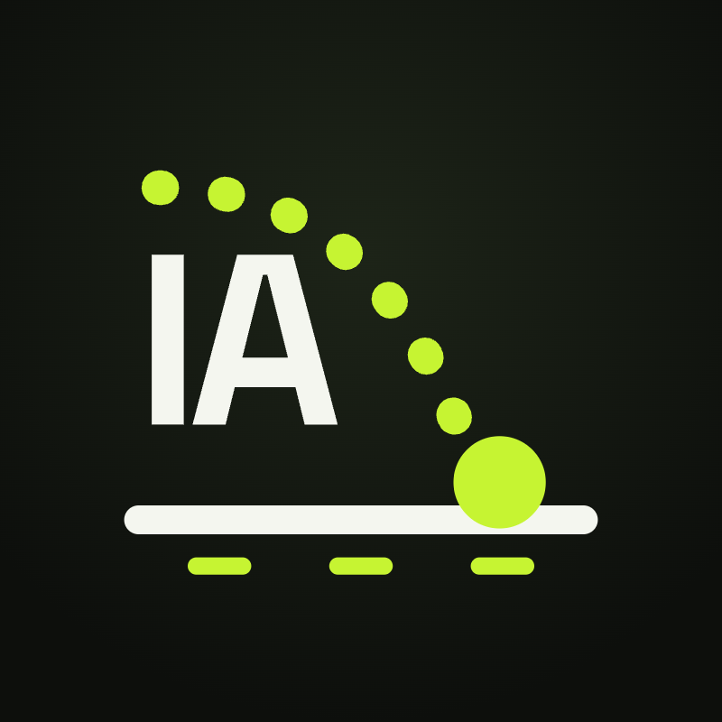

IA sin humo, aterrizada.
Cada semana exploro herramientas de IA, tipos de agentes y comparativas honestas. Y ayudo a organizaciones a llevarla a la práctica.
⬇ Guía gratis: estructura base de una política de IA 📩 Quiero llevar IA a mi organizaciónQué puedo hacer por ti
- Diagnóstico: ¿tu organización está lista para agentes de IA?
- Diseño e implementación de agentes y automatizaciones en Microsoft 365.
- Política de IA y formación para equipos y colegios.